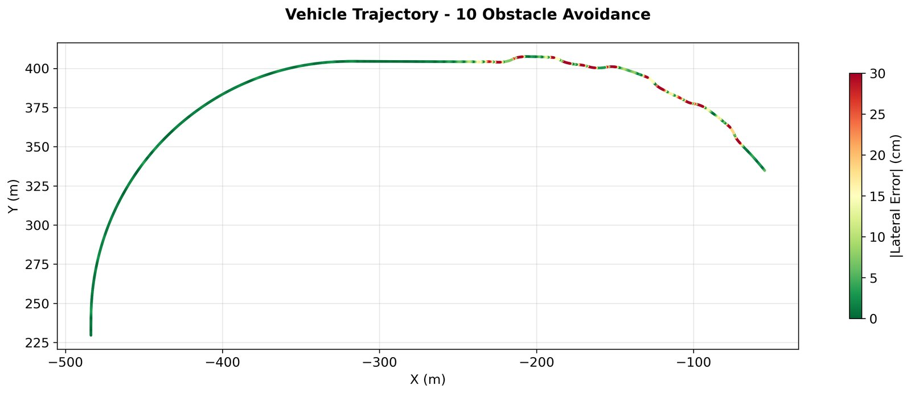
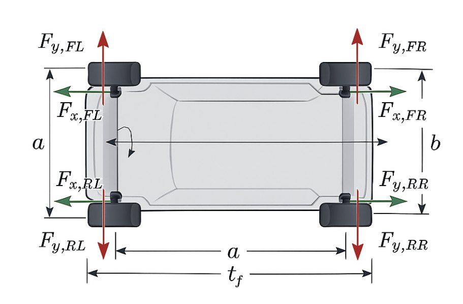
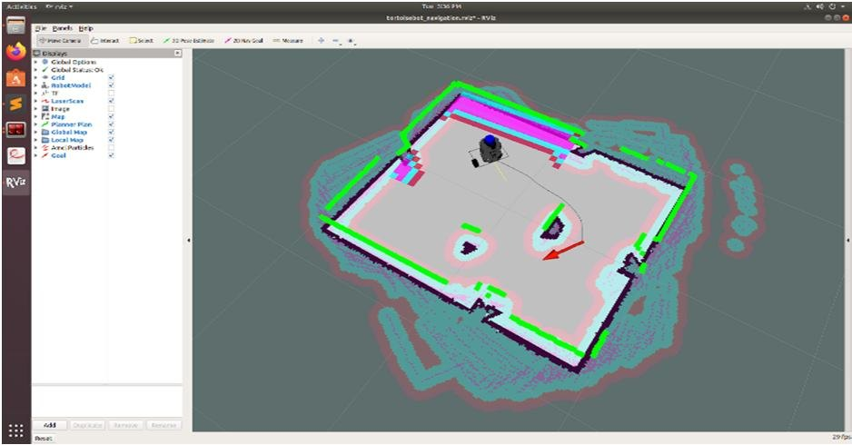

How I work
I'm a mechanical engineer who likes to build. I ask why on every part of a design, and I look for the simplest version that still does the job. I design for the people who have to make it, assemble it and fix it later, not just for the CAD model.
Most of my time goes into hardware that has to work on a real machine: the steering, sensor mounts and electronics that turned a bare-body EV into an autonomous test vehicle, a rebar-tying robot built at a startup in San Francisco, and die-cast and molded EV enclosures in production engineering. I also write the controls, so I can take a part from a sketch to a tested, moving system.
I graduate in December 2026 and I'm looking for full-time mechanical, robotics and hardware roles.
Selected work
Hardware I owned from first sketch to tested part.
Thesis · Texas A&M · 2024 to present
Autonomous conversion of an electric vehicle
Steering, sensing and electronics hardware that turned a bare-body EV into a computer-driven test vehicle, with no cutting, welding or drilling.
| Steering sensing | 4:1 geared encoder, 0.35° resolution |
|---|---|
| Steering control | 1.02° RMS tracking on the ground |
| Sensor mounts | Fan-cooled LiDAR, vibration-isolated camera |
| Controls | Hierarchical MPC, zero collisions in CARLA |
Arn Autonomy · San Francisco · 2025
Rebar-tying robot
Gantry chassis designed, built and tested for a robot that ties rebar crossings.
| Footprint | 427 × 427 mm, 2020 extrusion |
|---|---|
| Mass | 25% lighter after right-sizing |
| Deflection | Under 0.5 mm, SF above 2 |
| Repeatability | Under 5 mm over 100+ runs |
CREAT UNO Minda · Pune · 2023 to 2024
EV enclosures
On-board charger and wireless charger housings designed for casting, molding, assembly and service.
| Die-cast aluminum | 15% lighter enclosure |
|---|---|
| PC/ABS housing | 9% lighter, ≈ 2 t resin per 100K |
| Process | DFMEA, stack-ups, design reviews |
| Test rigs | RPAS rigs on 3 prototype vehicles |
Engineering projects
Controls, analysis and robotics work from my thesis and coursework.

Thesis · acados · CARLA
MPC for lane keeping and obstacle avoidance
10 obstacles in 120 s with zero collisions and zero solver failures, plus SLAM and degraded-GPS testing.
View project →
MATLAB · Simulink
Torque vectoring with nonlinear MPC
Four wheel torques chosen every 20 ms. Holds the path at 0.82 g where an equal torque split runs wide.
View project →
ROS · Raspberry Pi · Published
ROS navigation and teleoperation
Remote driving, camera streaming, LiDAR mapping and goal navigation on a two-wheeled robot.
View project →
ANSYS · SolidWorks
Playground equipment and trailer hitch in ANSYS
Four structures brought to a factor of safety of 4 to 10, and a hitch checked with mesh convergence.
View project →
Simulink · Minitab
DC motor modeling, DOE and tolerance study
First-principles motor model, DOE ranking, and a tolerance optimization that cut speed spread from 460 to 375 RPM.
View project →
MATLAB · Sensors
IMU orientation with an adaptive filter
Gyro and accelerometer blended, with gyro bias tracked across temperature and the blend adapted to motion.
View project →
Sensors · Embedded
Obstacle localization with ultrasonic and ToF
Range readings from known sensor positions turned into obstacle coordinates.
View project →
Python · MAPPO
Multi-robot cooperation with RL
How obstacles change cooperation between learning agents.
View project →Statistics · Dynamics
Biopsy robot needle vibration
Regression and ANOVA showed translational speed drives needle vibration most.
View project →Where I've worked
Mechanical Graduate Researcher
Autonomous Vehicles Lab, Texas A&M University · College Station, TX
- Lowered LiDAR temperature from 65°C to 57°C and mount weight 18% with a ventilated, fan-cooled mount design
- Reduced lane-detection failures in vehicle testing by designing a vibration-isolated camera mount
- Fabricated waterjet-cut sheet-metal mounts for four 96V hub-motor controllers and planned the harness routing
- Measured steering angle at 0.35° resolution over 540° by designing and assembling a 4:1 gear-driven encoder assembly
- Packaged the steering electronics into a frame-mounted enclosure with a removable cover for serviceability
- Validated an 8-state MPC with zero collisions in CARLA obstacle tests, backed by an emergency-braking supervisor

Mechanical & Robotics Engineering Intern
Arn Autonomy (formerly Spacer Robotics) · San Francisco, CA
- Designed a 427 × 427 mm gantry chassis for a rebar-tying robot in SolidWorks, sized from the rebar grid spacing and tool loads, with 2020 aluminum extrusions, drivetrain mounts and a guide-rail-stabilized linear actuator
- Trimmed robot mass 25% by right-sizing from 4045 to 2020 extrusions and doubling only the guide-rail members, keeping beam deflection under 0.5 mm and a safety factor above 2 under a 2× dynamic load
- Simplified assembly to one fastener size and standard extrusion hardware, with gusset plates to resist frame racking
- Created the BOM, built the prototype and validated sub-5 mm tool repeatability over 100+ runs by pairing 30 Hz visual servoing with a 200 Hz PID loop
Mechanical Engineer, EV Division
CREAT UNO Minda · Pune, India
- Reduced a die-cast aluminum charger enclosure's mass by 15% by thinning walls in CATIA V6 while protecting the sealing flange and mounting features through DFMEA and stack-up checks
- Cut a PC/ABS wireless charger housing's mass by 9% (about 2 metric tons of resin per 100K units) by reworking wall thickness, ribs and draft from the tooling supplier's DFM feedback
- Presented enclosure revisions in design reviews with CAE, tooling and quality teams, and updated the DFMEA with actions for the failure modes they raised
- Standardized Reverse Park Assist System (RPAS) testing across 3 prototype vehicles by designing and fabricating vehicle-mounted rigs that held ultrasonic and ToF sensors at design-intent spacing and angles
Graduate Teaching Assistant, Advanced Control Systems
Texas A&M University · College Station, TX
- Built a dual-loop motor thermal controller and taught it with PID and FreeRTOS labs to 150+ students
Mechanical CAD Intern
CADDESK · Bengaluru, India
- Modeled 3 assemblies from 50+ parts in Siemens NX by converting 2D drawings into parametric 3D models
Real-Time Remote Control and Autonomous Navigation of a Two-Wheeled Robot with ROS and Raspberry Pi 4
R. B. Rajeshkumar, S. Mahalingam, N. Yeswanth, Jeffry Rufus R., A. S. Thaneshwar · IJRASET, Vol. 11, Issue V, May 2023 · doi:10.22214/ijraset.2023.51996 · Project page
M.S. Engineering Technology (Mechanical), Texas A&M University · GPA 3.83 · Dec 2026
B.E. Automotive Engineering, Anna University · GPA 3.78
Tools and methods
CAD & drawings
- SolidWorks
- Siemens NX
- Creo
- CATIA V6
- GD&T (ASME Y14.5)
- Tolerance stack-ups
Design & analysis
- DFM / DFA
- DFMEA
- ANSYS FEA
- Hand calculations
- Material selection
- Design reviews
Manufacturing
- Die casting
- Injection molding
- Sheet metal
- Extrusion framing
- Waterjet
- 3D printing
Build & test
- Prototyping & assembly
- Fixtures and rigs
- BOM
- Oscilloscope, multimeter
- Root cause analysis
Robotics & controls
- PID, MPC / NMPC
- ROS 2, Gazebo
- EKF, sensor fusion
- CAN, RS-485, Teensy
- Python, C/C++, MATLAB
Contact
Open to full-time mechanical, robotics and hardware roles.
Graduating December 2026 and happy to relocate.